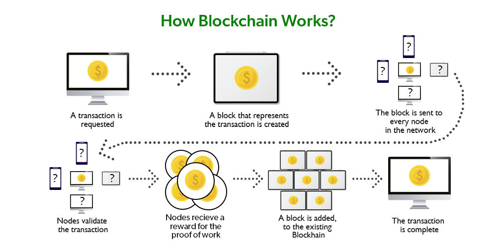

The Rise of Blockchain Technology
Date: 03/03/2024
Author: Chat GPT
The rise of blockchain technology has been nothing short of revolutionary, disrupting traditional industries and opening up new avenues for innovation across various sectors. Blockchain is a decentralized, distributed ledger technology that allows for secure, transparent, and immutable record-keeping of transactions. Here's an overview of its rise and impact:
Historical Background
Blockchain technology was first introduced in 2008 by an unknown person or group of people using the pseudonym Satoshi Nakamoto in a whitepaper titled "Bitcoin: A Peer-to-Peer Electronic Cash System." Bitcoin, the first cryptocurrency, was the first successful implementation of blockchain technology. It introduced the concept of a decentralized digital currency system that operates without the need for intermediaries like banks.Key Features
- Decentralization: Blockchain operates on a decentralized network of computers (nodes), which means that no single entity has control over the entire network. This decentralization enhances security and resilience against attacks or system failures.
- Transparency and Immutability: Once data is recorded on a blockchain, it is immutable, meaning it cannot be altered or deleted. This feature ensures the integrity of transactions and provides transparency, as all participants can verify the transaction history.
- Security: Blockchain uses cryptographic techniques to secure transactions and protect data from unauthorized access or tampering. Each block in the blockchain is linked to the previous one through cryptographic hashes, creating a secure and tamper-evident record.
Evolution and Diversification
While Bitcoin was the first application of blockchain technology, it has since evolved to encompass various other use cases and applications beyond cryptocurrencies. Some notable developments include:
- Smart Contracts: Smart contracts are self-executing contracts with the terms of the agreement directly written into code. They automatically enforce and execute the terms of the contract when predefined conditions are met, eliminating the need for intermediaries.
- Enterprise Blockchain Solutions: Many businesses and organizations are exploring the use of blockchain for various applications, such as supply chain management, identity verification, and secure data sharing among stakeholders.
- Decentralized Finance (DeFi): DeFi refers to a category of financial services and applications built on blockchain technology, aiming to disrupt traditional financial intermediaries and empower users with more control over their finances.
- Non-Fungible Tokens (NFTs): NFTs are unique digital assets representing ownership of a specific item or piece of content, such as digital art, collectibles, or virtual real estate. They are bought, sold, and traded on blockchain platforms, providing provenance and ownership authenticity.
Challenges and Opportunities
Despite its transformative potential, blockchain technology faces challenges such as scalability, interoperability, regulatory uncertainty, and environmental concerns (especially regarding energy consumption in proof-of-work consensus mechanisms). However, ongoing research and development efforts are addressing these challenges and exploring ways to enhance blockchain's scalability, efficiency, and sustainability.Future Outlook
The future of blockchain technology is promising, with continued innovation and adoption across various industries. As the technology matures and standards evolve, we can expect to see greater integration of blockchain into existing systems, increased interoperability between different blockchain networks, and the emergence of new decentralized applications that revolutionize traditional business models.In conclusion, the rise of blockchain technology represents a paradigm shift in how we store, transfer, and verify data and value in the digital age. Its decentralized, transparent, and secure nature holds the potential to reshape industries, empower individuals, and drive innovation in the years to come.